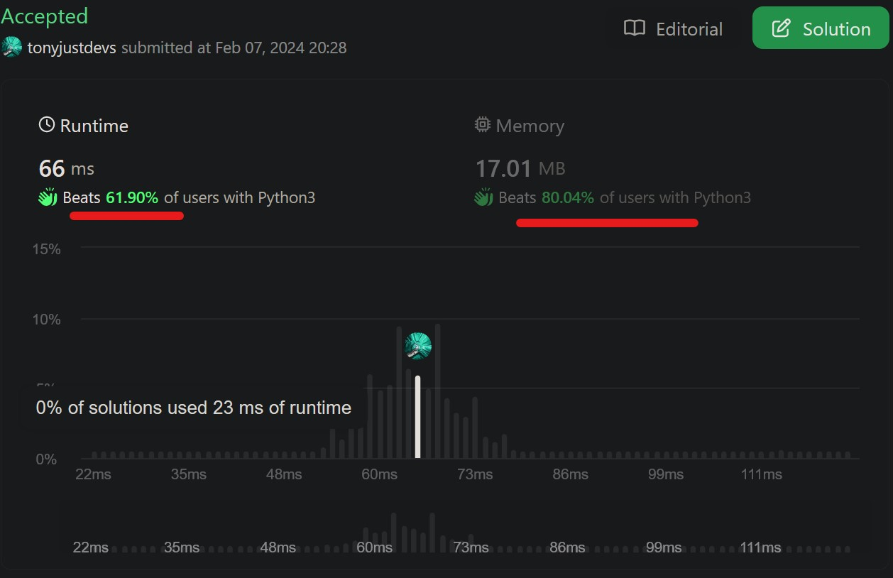

class Solution:
def evalRPN(self, tokens: [str]) -> int:
# Rule 5: Input expression is valid, no check required,
# ie doesn't start with operateor
if len(tokens) ==0: # check if no token
return 0 # Probably not needed due for R5 but wrote save time in case
stack = [] #initialise stack
stack.append(tokens[0]) # first item is valid due to R5 so set it to stk
### [1] operator functions/mapping (*,-,+,/)
### [2] .pop_top_2(stack):
### [3] .operate(top_2_items, operator #[2.1]):
for i in range(1,len(tokens)):
# stack = [2]
curr_chr = tokens[i]
if curr_chr in operators:
top_2_items = [top_2, top_1] = pop_top_2(stack) # [1]
# [validation]: do spot check stacked removed top 2
res = operate(top_2_items,curr_chr) #[2]
stack.append(res)
else: # is a valid integer so just append to top
stack.append(curr_chr)
return stack
1. Problem Description
You are given an array of strings tokens that represents an arithmetic expression in a Reverse Polish Notation (RPN).
Input: Evaluate the input RPN arithmetic expression.
Output: Return an integer that represents the value of the expression.
Rules:
1. The valid operators are ‘+’, ‘-’, ‘*’, and ‘/’.
2. Each operand may be an integer or another expression.
3. The division between two integers always truncates toward zero
4. There will not be any division by zero.
5. The input represents a valid arithmetic expression in a reverse polish notation.
6. The answer and all the intermediate calculations can be represented in a 32-bit integer.
2. LeetCode Examples
2.1 Example 1
Input: tokens = ["2","1","+","3","*"]
Output: 9
Explanation: ((2 + 1) * 3) = 9
2.2 Example 2
Input: tokens = ["4","13","5","/","+"]
Output: 6
Explanation: (4 + (13 / 5)) = 6
2.3 Example 3
Input: tokens = ["10","6","9","3","+","-11","*","/","*","17","+","5","+"]
Output: 22
Explanation:
((10 * (6 / ((9 + 3) * -11))) + 17) + 5
= ((10 * (6 / (12 * -11))) + 17) + 5
= ((10 * (6 / -132)) + 17) + 5
= ((10 * 0) + 17) + 5
= (0 + 17) + 5
= 17 + 5
= 22
3. Background and Analysis
The wiki explains this is also known as postfix notation, the operators follow their operands, in contrast to prefix (Polish) notation (operators precede their operands).
3.1 Wiki Example
To add 3 and 4 together, the expression is [3 4 +] rather than [3 + 4].
- The conventional notation expression [3 − 4 + 5] becomes [3 4 − 5 +] in reverse Polish notation:
- 4 is first subtracted from 3, then - 5 is added to it.
3.2 Stack Explanation
The concept of a stack, a last-in/first-out construct. In the example [3 4 −]:
1. push 3 to stack: [3] 2. push 4 to stack; ie 4 is now on top, 3 below it: [3 4] 3. apply subtraction operator: - Remove top two items from the stack: - performs 3 − 4, and 4. push the result of −1 to top of stack.
3.3 Stack Explanation Table
3.3.1 Example 1: [3 4 −] with all steps
| Python Pseudocode | Stack_Expected | Output_Expected | Comments |
|---|---|---|---|
| rpn_obj = rpn_cls() | [ ] |
null | initialise stack |
rpn_obj.push(3) |
[3] |
null | push 3 to stack_top |
rpn_obj.push(4) |
[3,4] |
null | push 4 to stack_top |
| rpn_obj.op()[pt_1]: .pop(top 2) | [ ] |
[3,4] |
pop [3] [4] stack_top_2 |
| rpn_obj.op()[pt_2]: .op(top 2) | [-1] |
[3,4] |
operate(3,4,-) on stack_top_2 |
| rpn_obj.op()[pt_3]: .truncate(res) | [-1] |
-1 |
int(result), truncate to zero as per Rule_3 |
| rpn_obj.op()[pt_4]: .return() | [-1] |
-1 |
return operated result |
| rpn_obj.op()[pt_5]: .push(result) | [-1] |
null | push results stack_top |
3.3.2 Example 2: [3 4 × 5 6 × +] with concise steps
| Python Pseudocode | Stack_Expected | Comments |
|---|---|---|
| rpn_obj = rpn_cls() | [ ] |
initialise stack |
rpn_obj.push(3) |
[3] |
push 3 to stack_top |
rpn_obj.push(4) |
[3,4] |
push 4 to stack_top |
rpn_obj.op(x) |
[12] |
rem top_2 3,4, op 3*4, push top 12 |
rpn_obj.push(5) |
[12,5] |
push 5 to stack_top |
rpn_obj.push(6) |
[12,5,6] |
push 6 to stack_top |
rpn_obj.op(x) |
[12,30] |
rem top_2 5,6, op 5*6, push top 30 |
rpn_obj.op(+) |
[meaning of life] |
rem top_2 12,30, op 12+30, push top 42 |
3.3 Why?
The advantage of RPN is it:
- removes the need for order of operations and parentheses that are required by infix notation and
- can be evaluated linearly, left-to-right.
For example, the infix expression (3 × 4) + (5 × 6) becomes [3 4 × 5 6 × +] in reverse Polish notation.*
4. Coding
4.1 Write pseudo-python-code
4.2 Write Required Functions
class Solution:
def evalRPN(self, tokens: [str]) -> int:
if len(tokens) == 0:
return 0
stack = []
stack.append(int(tokens[0]))
operators = ['*', '+', '-', '/']
def operate(operator,x2,x1):
print(f"operator: {operator}, top2:{x2}, top1:{x1}")
if operator == '+':
return x2+x1
elif operator == '-':
return x2-x1
elif operator == '*':
return x2*x1
elif operator == '/':
return int(x2/x1)
else:
print("unknown operator!")
return False
def pop_top_2(stack):
print(len(stack))
if len(stack) <2:
print("Stack too short!")
return False
else:
top_1 = stack.pop()
top_2 = stack.pop()
top_2_items = [top_2,top_1]
print(top_2_items)
return top_2_items
for i in range(1,len(tokens)):
curr_chr = tokens[i]
if curr_chr in operators:
operator = curr_chr
top_2_items = pop_top_2(stack)
res = operate(operator, top_2_items[0],top_2_items[1])
stack.append(res)
else:
stack.append(int(curr_chr))
print(stack)
return stack
soln = Solution()5. Test Functionality
5.1 Case 1 Expected 9
soln.evalRPN(["2","1","+","3","*"])2
[2, 1]
operator: +, top2:2, top1:1
2
[3, 3]
operator: *, top2:3, top1:3
[9][9]5.2 Case 2 Expected 6
soln.evalRPN(["4","13","5","/","+"])3
[13, 5]
operator: /, top2:13, top1:5
2
[4, 2]
operator: +, top2:4, top1:2
[6][6]5.3 Case 2 Expected 22
soln.evalRPN(["10","6","9","3","+","-11","*","/","*","17","+","5","+"]) 4
[9, 3]
operator: +, top2:9, top1:3
4
[12, -11]
operator: *, top2:12, top1:-11
3
[6, -132]
operator: /, top2:6, top1:-132
2
[10, 0]
operator: *, top2:10, top1:0
2
[0, 17]
operator: +, top2:0, top1:17
2
[17, 5]
operator: +, top2:17, top1:5
[22][22]6. Clean Version
class Solution:
def evalRPN_clean(self, tokens: [str]) -> int:
stack = []
stack.append(int(tokens[0]))
operators = ['*', '+', '-', '/']
def operate(operator,x2,x1):
if operator == '+':
return x2+x1
elif operator == '-':
return x2-x1
elif operator == '*':
return x2*x1
else:
return int(x2/x1)
def pop_top_2(stack):
top_1 = stack.pop()
top_2 = stack.pop()
return [top_2,top_1]
for i in range(1,len(tokens)):
curr_chr = tokens[i]
if curr_chr in operators:
top_2_items = pop_top_2(stack)
res = operate(curr_chr, top_2_items[0],top_2_items[1])
stack.append(res)
else:
stack.append(int(curr_chr))
return stack[0] ############### fixed after submission 2 ###############
soln = Solution()
soln.evalRPN_clean(["10","6","9","3","+","-11","*","/","*","17","+","5","+"])226.1 Clean Check
soln.evalRPN_clean(["2","1","+","3","*"])9soln.evalRPN_clean(["4","13","5","/","+"])6soln.evalRPN_clean(["10","6","9","3","+","-11","*","/","*","17","+","5","+"])227. Submit
- First attempt Failed, because I returned the stack as a list with result as the first item.
- Second attempt Accepted! Quick fix after indexing out the value form the list. Not a bad result.
- Top 40% in Speed and
- Top 20% in Memory.

6. Notes to self.
This took alot of time setting up the problem, the solving part was quite fast.
I need to be more seemless in set up!
[Future Iterations 1]: Incorporate best solutions from LC
[Future Iterations 2]: Attempt iterations for speed and memory